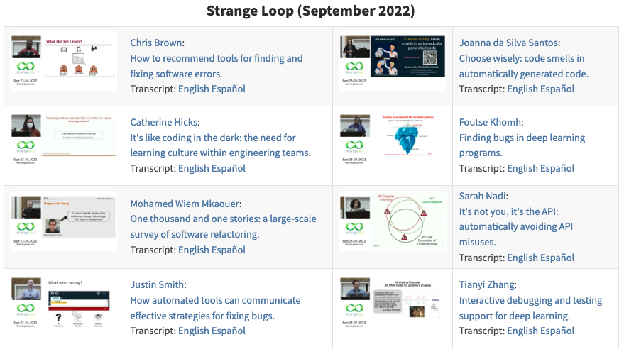

Data Science
for Software Engineers

Greg Wilson
http://third-bit.com/talks/ds4se/

Book review editor for Doctor Dobb’s Journal
There were hundreds of textbooks on compilers, but none on debuggers or debugging
Or build tools, or package managers, or…
Asked to teach a course on software architecture
Looked at two dozen books and other people’s courses…
…but none described actual architectures
This, we can fix
Learning should always flow in both directions
What do software engineering researchers know that practitioners might care about?

It Will Never Work in Theory launched in 2011
Relaunched in 2021 with reviews and online lightning talks

None
We still don’t teach science to CS students
So practitioners don’t know what they’re missing or how to interpret it if they found it

Languages in the C family are as hard to learn as a randomly-designed language
Computer science grades are not bimodal
Students don’t make the mistakes instructors think they make
No significant difference between test-driven and test-after development
Data science is rather popular these days…
Students have heard of it
Deans and provosts think it’s a Good Thing [tm]
Teach empirical software engineering in disguise
Single-semester course with work done in small teams
Minimize curricular disruption
Still teach workflow, meetings, progress reporting, etc.
Build an analysis pipeline for software engineering data
| Requirements analysis | ✓ |
| Software design | ✓ |
| Dev Ops | ✓ |
| Presentation skills | ✓ |
Given the GitHub repositories for six software projects, determine whether large PRs take longer to merge than short ones.
Requires tool use, model building, and statistical analysis
Students do science, so they understand and value it, so they engage with it later
And is culturally defensible
People of Asian ancestry are 8% of the Canadian population but 60-75% of undergraduates in Computer Science. Write two one-page papers to argue pro and con that this proves people of European descent are naturally less capable of abstract reasoning than their Asian counterparts.
Compare and contrast your arguments with those made about the under-representation of women in computing.
"You'd like Freedom, Truth, and Justice, wouldn't you, Comrade Sergeant?" said Reg encouragingly.
"I'd like a hard-boiled egg," said Vimes, shaking the match out.
There was some nervous laughter, but Reg looked offended. "In the circumstances, Sergeant, I think we should set our sights a little higher—"
"Well, yes, we could," said Vimes. "But…well, Reg, tomorrow the sun will come up again, and I'm pretty sure that whatever happens we won't have found Freedom, and there won't be a whole lot of Justice, and I'm damn sure we won't have found Truth. But it's just possible that I might get a hard-boiled egg."
— Sir Terry Pratchett, Night Watch
A dozen people (or pairs) contribute one week’s material each
Three 50-minute lectures
One set of exercises
Preferably recapitulate interesting published results
Assume students have done Data Structures & Algorithms in Python…
…know the basics of Git and unit testing…
…and vaguely remember what standard deviation means
MIT License for code samples
Creative Commons – Attribution – Non-Commercial license for prose
Publisher retains rights to physical copies, PDF, and e-book
HTML version free to read online forever
All royalties go to charity